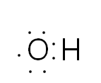

해설 1
방사능 붕괴와 자유 라디칼
문제 2-1. 산소원자는 원자가전자가 6개이고 수소원자는 원자가전자가 1개이므로 루이스전자점식 구조는 아래와 같다.
\[\cdot \ddot{\text{O}} : \text{H}\]
그런데 이 경우 산소원자가 홀전자를 갖게 되어 옥테트를 만족시키지 못하게 되어 불안정하며 이 홀전자와 짝을 이룰 전자를 얻기 위해 다른 분자들을 공격하므로 상당히 반응성이 높다.

문제 2-2.
\(-\dfrac{dN}{dt} = kN\) 로부터 적분하면 \(\ln\left(\dfrac{N}{N_0}\right) = -kt\), 그리고 \(k = \dfrac{\ln 2}{t_{1/2}}\) 로부터 \(\ln\left(\dfrac{N}{N_0}\right) = -\ln 2\left(\dfrac{t}{t_{1/2}}\right)\)그리고
붕괴속도 \(= kN\) 이므로 \(\dfrac{\text{시간 } t \text{에서 붕괴속도}}{\text{시간 } t = 0 \text{에서 붕괴속도}} = \dfrac{kN}{kN_0} = \dfrac{N}{N_0}\)
문제에서 주어진 값들을 적절히 대입하면 \(\ln\left(\dfrac{2500}{10000}\right) = -\ln 2\left(\dfrac{1\text{시간}}{t_{1/2}}\right)\)
따라서 반감기 \(t_{1/2}\)는 30분이 된다.